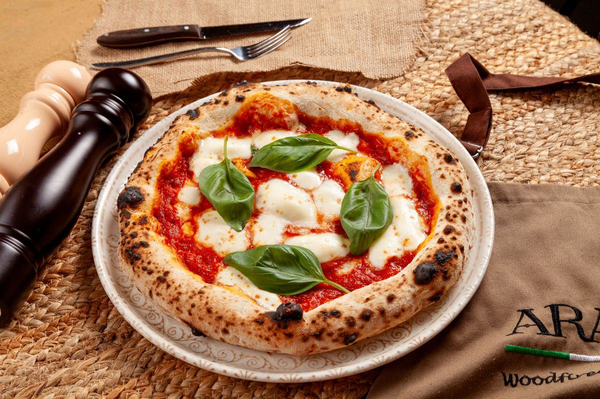

Le four rotatif est né d'un constat simple : dans un four à sole fixe, la pizza posée près du feu cuit trois fois plus vite que celle du fond. Faire tourner la sole règle le problème mécaniquement. C'est le four qui a permis à des dizaines de restaurants français de servir de la vraie napolitaine sans recruter un maestro formé quinze ans devant un feu de bois.
Sous le four, un motoréducteur entraîne un plateau réfractaire. Simple sur le papier, exigeant en réalisation.
La vitesse se règle selon la cuisson visée, et la plupart des modèles permettent d'inverser le sens. Un tour complet correspond en pratique à une cuisson : la pizza revient devant vous quand elle est prête.
Plus de fournées : on pose une pizza sur la sole qui défile, on récupère celle qui arrive. Le rythme devient linéaire, ce qui simplifie énormément la coordination avec la salle.
Le pizzaïolo reste face à la bouche, pelle courte en main. Fini le bras tendu jusqu'au fond du four et les brûlures d'avant-bras contre la voûte : c'est un vrai gain d'ergonomie sur un service de trois heures.
Dans un four fixe, la maîtrise des zones chaudes est un savoir-faire : on tourne chaque pizza deux ou trois fois, on la déplace, on surveille. Sur un rotatif, chaque pâton reçoit exactement la même quantité de chaleur. Le résultat en salle est immédiat : douze pizzas identiques pour une tablée de douze, ce qui est presque impossible à obtenir autrement en plein coup de feu.
Une sole de 130 cm accueille 8 à 11 pizzas simultanément. À 90 secondes de cuisson, cela ouvre des débits que les fours à chambres n'atteignent pas sans multiplier les modules. Et surtout, la cadence ne dépend plus du niveau d'expérience de la personne qui est devant : un commis correctement formé tient le rythme en quelques jours.
Le rotatif est donc le pont naturel entre le four à bois traditionnel, exigeant en savoir-faire, et le four à convoyeur, totalement automatisé mais sans caractère. Il garde la flamme et la sole réfractaire, il retire la pénibilité.
Le rotatif n'impose pas son combustible : c'est votre local et votre carte qui tranchent.
Le rendu traditionnel intégral et le spectacle du foyer visible. Impose conduit, tubage, stockage et ramonage certifié, exactement comme un four à bois classique.
Montée rapide, température stable, coût d'exploitation contenu sur les gros volumes. Exige une arrivée conforme et une ventilation dédiée — voir notre page four à gaz.
Pour les locaux sans conduit possible. Puissance élevée (souvent 15 à 25 kW en triphasé 400 V), donc raccordement à valider en amont avec votre électricien.
Le plus demandé aujourd'hui : le brûleur maintient la température de fond, le feu de bois apporte l'arôme et l'image. On garde la souplesse sans renoncer à la flamme.
La sole se choisit en fonction du pic de service, pas de la moyenne. C'est le pic qui fait les mauvais avis.
5 à 7 pizzas de 30 cm simultanément. Encombrement raisonnable, chauffe rapide, consommation modérée. Le format d'entrée du rotatif, souvent suffisant en emporter et petite salle.
8 à 11 pizzas simultanément. Couvre la grande majorité des restaurants à forte fréquentation, avec de la marge pour les vendredis et samedis soir. Le meilleur rapport capacité / encombrement.
12 à 14 pizzas. Nécessite un vrai espace de travail devant la bouche, une extraction dimensionnée en conséquence et, presque toujours, une vérification de structure du plancher.
Un rotatif complet pèse de 1 200 à 3 000 kg selon le diamètre et la construction, sur une emprise au sol réduite. La charge peut dépasser 500 kg/m². En rez-de-chaussée sur dalle pleine, cela passe généralement sans discussion. À l'étage, sur plancher bois ou au-dessus d'un sous-sol, une étude de structure s'impose — et elle se fait avant de signer le bon de commande, pas à la livraison.
Certains modèles arrivent en éléments à assembler sur place, d'autres d'un seul bloc. Mesurez la largeur de porte, les angles de couloir, la hauteur sous linteau, et vérifiez qu'un transpalette ou un chariot peut approcher. Une livraison qui s'arrête sur le trottoir coûte cher en manutention manuelle. Notre guide installation et extraction liste les cotes à relever.
Fourchettes hors taxes sur du matériel neuf, hors conduit, habillage, livraison et manutention.
| Diamètre de sole | Capacité simultanée | Poids indicatif | Prix HT |
|---|---|---|---|
| 95 – 110 cm | 5 à 7 pizzas | 1 200 – 1 600 kg | 12 000 – 17 000 € |
| 120 – 130 cm | 8 à 11 pizzas | 1 700 – 2 300 kg | 17 000 – 24 000 € |
| 140 – 145 cm | 12 à 14 pizzas | 2 400 – 3 000 kg | 23 000 – 30 000 € |
| Option hybride bois + gaz | — | — | + 1 500 – 3 500 € |
| Habillage de façade sur mesure | — | — | 1 000 – 4 000 € |
Soit 12 000 à 30 000 € HT pour le four. C'est l'investissement le plus lourd du catalogue, mais il se compare à deux fours à chambres plus un poste de travail supplémentaire. Le guide des prix détaille l'amortissement, et le leasing reste la voie la plus courante sur ce type de matériel.
Diamètre, énergie, poids au sol, accès au local : décrivez votre projet, on fait vérifier avant de chiffrer.